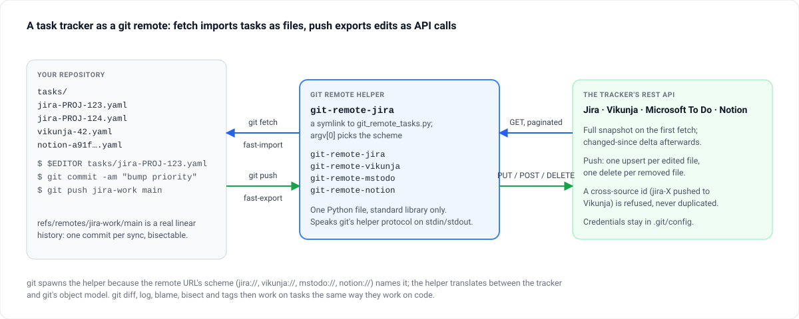

Git remote helper · Python, standard library only · MIT
Your task tracker, as a git remote.
git fetch jira-work pulls every issue in as a file under tasks/. Edit one in your editor, commit, git push — and the issue changes on Jira. Vikunja, Microsoft To Do and Notion the same way. Every sync is a commit, so diff, log, blame, bisect and tags work on tasks.

A git remote helper is any executable named git-remote-<scheme> on the PATH: git spawns it for a URL with that scheme and speaks a line protocol over stdin and stdout. This one translates between each tracker's REST API and git's object model — nothing else in your workflow changes.
Every sync is a commit
refs/remotes/<remote>/main is a real linear history based on the previous tip. git diff main jira/main shows what changed upstream; git log -- tasks/ is the audit trail; git bisect walks every sync.
YAML or Org-mode
One format per repository, chosen at init. YAML diffs one property per line; Org gives Emacs and neovim agenda, DEADLINE: lines and [#B] priorities. Both round-trip through one schema.
Incremental
A full snapshot on the first fetch, a changed-since delta afterwards, with tombstones for deletions. The since token is recorded only once the tip has advanced, so an interrupted import never loses data.
Honest push
One upsert per edited file, one delete per removed file. A cross-source id is refused rather than duplicated; ok or error per ref, and git push's exit code reflects every failure.
Credentials in .git/config
Tokens live under [tasks-remote "<name>"], never in the URL. check <remote> validates the required keys without touching the network and redacts the secret-like ones.
Nothing to install but itself
Python 3.10+ and git 2.20+. install --bin-dir drops the file and the four symlinks on your PATH; msal is the one optional extra, for To Do's device-code login.
How it works
Two directions of git's remote-helper protocol, one file answering both.
- git fetch: capabilities, list, import
The helper decides between a full snapshot —
deletealland a rebuilttasks/tree — and a delta:Mfor changed files,Dfor tombstones. - A fast-import stream
Written to stdout, based on the previous remote tip with
from <sha>. Git builds the commit; the newsincetoken is persisted only when the tip has advanced. - git push: a fast-export stream
Git writes the commits to push. Each
Mundertasks/is deserialised and upserted on the tracker; eachDis deleted; anything outsidetasks/is ignored. - ok or error, per ref
Every failure is reported by name and the exit code is non-zero if anything failed; nothing is retried behind your back.
Quick start
Python 3.10+ and git 2.20+. Credentials go into the repository's .git/config with git config; the URL only carries the scheme.
Install and initialise
git clone https://github.com/mmdemirbas/git-remote-tasks.git ~/src/git-remote-tasks
python ~/src/git-remote-tasks/git_remote_tasks.py install --bin-dir ~/.local/bin
tasks-init --format yaml ~/work/tasks && cd ~/work/tasks
git remote add vikunja vikunja://localhost:3456
git config tasks-remote.vikunja.scheme vikunja
git config tasks-remote.vikunja.baseUrl http://localhost:3456
git config tasks-remote.vikunja.apiToken $(pass show vikunja/api)Schemes: jira://company.atlassian.net, vikunja://host, mstodo://consumers, notion://db-<id>. The host part is informational.
Fetch, edit, push
git fetch vikunja
git merge vikunja/main --allow-unrelated-histories # first time only
$EDITOR tasks/vikunja-42.yaml
git add tasks/ && git commit -m "tasks: raise priority on 42"
git push vikunja main # updates task 42python git_remote_tasks.py check vikunja validates the configuration without a network call.
The git workflow
Ordinary git commands, and what each means for tasks.
| Git command | Effect |
|---|---|
git fetch <remote> | Pulls the remote task snapshot into <remote>/main |
git diff main <remote>/main | What changed upstream since the last sync |
git merge <remote>/main | Materialises remote tasks into the working tree |
git log -- tasks/ | The audit trail of every sync and manual edit |
git push <remote> main | Upserts edited tasks; deletes removed files |
git tag release/2026-W38 | A snapshot of task state at a moment in time |
What a task looks like
tasks/<source>-<native-id>.yaml — or .org — one file per task, every field on its own line.
# tasks/jira-PROJ-123.yaml
id: jira-PROJ-123
source: jira
title: Rotate the signing key before the audit
description: |
The current key expires on the 14th; the audit starts on the 7th.
status: in_progress
priority: high
created_date: "2026-09-02T09:14:00+00:00"
due_date: "2026-10-01"
updated_date: "2026-09-18T16:40:12+00:00"
tags:
- security
- q4
category:
id: PROJ
name: Platform
type: project
url: https://company.atlassian.net/browse/PROJ-123Configuration
Everything under [tasks] and [tasks-remote "<name>"] in the repository's .git/config. The keys that matter most; the full reference is in the README.
| Key | Scheme | Meaning |
|---|---|---|
tasks.format | — | yaml or org, set once at init |
scheme | all | jira, vikunja, mstodo or notion |
baseUrl, apiToken, email | jira, vikunja | Service URL and credentials; email for Atlassian |
projectKey / projectId | jira / vikunja | Required to create new issues or tasks on push |
jql | jira | Override the default filter |
tenantId, clientId, defaultListId | mstodo | MSAL tenant and app; the list for create and delete |
databaseId, token | notion | Target database and integration token |
syncOverlapSeconds | jira, vikunja, notion | Subtracted from the persisted since so events that landed mid-fetch are not missed; default 5 |